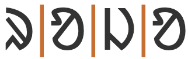
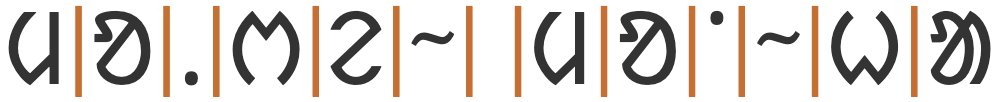
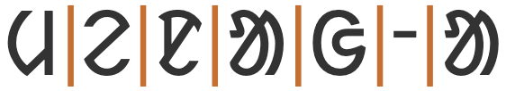
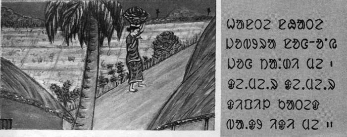
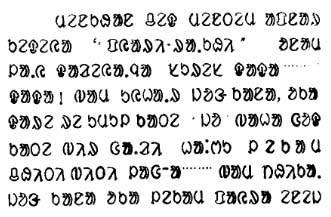
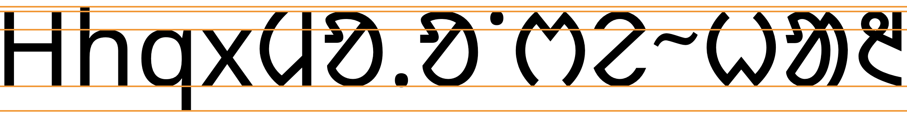
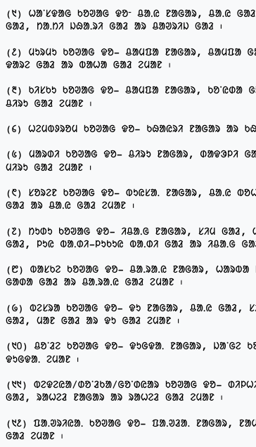
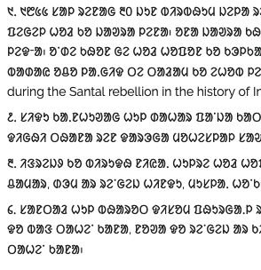
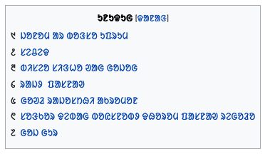

This page brings together basic information about the Ol Chiki script and its use for the Santali language. It aims to provide a brief, descriptive summary of the modern, printed orthography and typographic features, and to advise how to write Santali using Unicode.
The Ol Chiki script ( ᱚᱞ ᱪᱤᱠᱤ ) was invented by Pandi Raghunath Murmu in the 1920s to provide Santali, spoken by around 6 million people, with a dedicated script, instead of the Latin, Bengali, Devanagari, and Odia that had been and still are used. Ol Chiki is primarily used for the southern dialect of Santali, and has received some official recognition. It has been used for other Munda languages.
Unicode 17 has 1 dedicated Ol Chiki block, comprising 48 characters.
The Ol Chiki script is an alphabet, ie. all vowels are written explicitly, alongside consonants; there is no inherent vowel in a consonant (abugidas), certain vowels are not systematically dropped (abjads), and consonant and vowel are not combined in the same character (syllabaries).
Ol Chiki is mostly a simple and small orthography. There are no combining characters, and no symbols.
Vowel absence Since this is an alphabet, vowel absence in consonant clusters or after codas is marked simply by an absence of vowel letters. There is no special shaping or mark to indicate a consonant cluster.
However, Ol Chiki has a unique way of handling syllable-final consonants. Four of the voiced stops are typically pronounced unreleased, and unvoiced if they don't appear before a vowel. Where the full value of the letter should be retained, this can be indicated using a modifier called ahad. Another hyphen-like modifier, phaarkaa, applies the reduction before a vowel, when needed (for example for certain verb forms).
Vowels are written using 6 basic vowel letters and 3 digraphs, where an existing vowel letter is followed by a dot. All vowels can be nasalised and lengthened by modifier letters. There are no combining marks.
Basic vowels
The standard vowel sounds for Santali are written as follows.
ᱤ,ᱩ,ᱮ,ᱳ,ᱚ,ᱟ
Additional vowels
Three additional vowel sounds are represented using ᱹ,
ᱮᱹ,ᱚᱹ,ᱟᱹ
ᱚᱹ is rarely used, and the phonetic difference between it and ᱚ is not clearly defined, but the ALA-LOC transcription page says that it has a lower pitch. The phonemic difference between the two may be only marginal.rp,9
Long vowels
To indicate a prolonged vowel sound, ᱻ is used.rp,9
eg.
ᱢᱚᱹᱬᱮᱻ ᱢᱚᱸᱻᱦᱟ
ᱡᱭᱻᱭᱤ
Nasalisation
Nasalisation of vowels is indicated using ᱸ.rp,9
eg.
ᱦᱟᱸᱰᱮ
When the letter is followed by ᱹ a separate Unicode character is used, rather than adding the two characters. That character is ᱺ.rp,9
eg.
ᱵᱮᱺᱫᱤ
Standalone vowels
Standalone vowels are written using ordinary vowel letters and no special arrangements.
eg.
ᱚᱞ ᱪᱤᱠᱤ
Vowel sounds to characters
This section maps Santali vowel sounds to common graphemes in the Ol Chicki orthography.
i
vowelᱤ
ĩ
vowelᱤᱸ
iː
vowelᱤᱻ
u
vowelᱩ
ũ
vowelᱩᱸ
uː
vowelᱩᱻ
e
vowelᱮ
ẽ
vowelᱮᱸ
eː
vowelᱮᱻ
o
vowelᱳ
õ
vowelᱳᱸ
oː
vowelᱳᱻ
ə
extended vowelᱟᱹ
ə̃
extended vowelᱟᱺ
ɛ
extended vowelᱮᱹ
ɛ̃
extended vowelᱮᱺ
ɛː
vowelᱮᱹᱻ
ɔ
vowelᱚ
extended vowelᱚᱹ
ɔ̃
vowelᱚᱸ
extended vowelᱚᱺ
ɔː
vowelᱚᱻ
extended vowelᱚᱹᱻ
a
vowelᱟ
ã
vowelᱟᱸ
aː
vowelᱟᱻ
Vowel absence
Vowel absence principally occurs either when a consonant is a syllable coda, or when a consonant is part of a consonant cluster.
Since this is an alphabet, the absence of vowel sounds in consonant clusters or after codas is marked simply by an absence of vowel letters. There is no special shaping or mark to indicate a consonant cluster. The orthography has no conjuncts.
eg.
ᱢᱚᱱᱛᱨᱤ
ᱢ,ᱚ,ᱱ,ᱛ,ᱨ,ᱤ
ᱢᱟᱨᱟᱝ
ᱢ,ᱟ,ᱨ,ᱟ,ᱝ
Consonants
Consonant summary table
This table summarises only basic consonant to character assignments. Click on the phonetic transcriptions for more detail.
Basic consonant sounds in Santali are written using the following letters.
Click on each letter for more details and for examples of usage, especially where more than one sound is indicated.
ᱯ,ᱵ,ᱛ,ᱫ,ᱪ,ᱰ,ᱴ,ᱡ,ᱠ,ᱜ,ᱥ,ᱦ,ᱢ,ᱱ,ᱧ,ᱬ,ᱝ,ᱣ,ᱶ,ᱨ,ᱲ,ᱞ,ᱭ
Aspiration
Aspirated consonant sounds are indicated using ᱷ after the consonant.fp,2
eg.
ᱡᱷᱚᱛᱚᱛᱷᱚᱲᱟ
Codas
ᱽ,ᱼ
Four voiced stops are pronounced unvoiced and unreleased when they are not followed by a vowel, especially in word-final position.
ᱵ
b
→
p̚
eg. ᱩᱵ
ᱫ
d
→
t̚
eg. ᱢᱮᱫ
ᱡ
ɟ
→
c̚
eg. ᱢᱩᱡ
ᱜ
ɡ
→
k̚
eg. ᱫᱚᱜ
Where the voicing needs to be maintained, ᱽ is added, eg.
ᱨᱚᱡᱽ
cf. ᱨᱚᱡᱚ
ᱫᱟᱜᱽ
cf. ᱫᱟᱜᱤ
In the opposite situation, where a voiced consonant is used before a vowel but you want to allow the devoicing, put ᱼ before the vowel.rp,10 For example, see this verb form:
eg.
ᱢᱮᱱᱟᱜᱼᱟ
Consonant sounds to characters
This section maps Santali consonant sounds to common graphemes in the Ol Chiki orthography.
p
consonantᱯ
consonantᱵCoda (unreleased), ie. -p̚.
pʰ
consonantᱯᱷ
b
consonantᱵ
consonantᱵᱽCoda.
bʰ
consonantᱵᱷ
t
consonantᱛ
consonantᱫCoda (unreleased), ie. -t̚.
tʰ
consonantᱛᱷ
d
consonantᱫ
consonantᱫᱽCoda (unreleased).
dʰ
consonantᱫᱷ
ʈ
ᱴ
ɖ
pre-nasalised consonantᱰ
c
consonantᱪ
consonantᱡCoda (unreleased), ie. -c̚.
cʰ
consonantᱪᱷ
ɟ
consonantᱡ
consonantᱡᱽCoda (unreleased).
ɟʰ
consonantᱡᱷ
k
ᱠ
consonantᱜCoda (unreleased), ie. -k̚.
kʰ
consonantᱠᱷ
ɡ
consonantᱜ
consonantᱜᱽCoda (unreleased).
ɡʰ
consonantᱜᱷ
ʔ
consonantᱦmay occur when word-final.
s
consonantᱥ
h
consonantᱦ
m
consonantᱢ
n
consonantᱱ
ɳ
ᱬ
ɲ
consonantᱧ
ŋ
consonantᱝ
w
consonantᱣ
w̃
ᱶ
r
consonantᱨ
ɽ
ᱲ
l
consonantᱞ
j
consonantᱭ
Numbers
Digits
Ol Chiki has a set of native digits
᱐,᱑,᱒,᱓,᱔,᱕,᱖,᱗,᱘,᱙
Text direction
Santali text runs left to right in horizontal lines.
Santali letters don't interact, so no special shaping is needed.
And there are no combining mark, so context-based positioning of glyphs is also not necessary.
Typographic units
Word boundaries
Word units are separated by spaces.
Paired words may be separated by ᱼ.
eg.
ᱥᱩᱡᱷᱼᱵᱩᱡᱷsujʰ-bujʰ
Graphemes
Since there are no combining marks or decompositions, grapheme clusters correspond to individual characters.
Question: Should nasalisation or vowel extension dots be handled like combining characters, ie. form a grapheme with the preceding character?
Grapheme clusters
Base
Each base letter is a grapheme cluster, and there are no combining marks to extend them. Other following markers, being letters, are also treated as grapheme clusters, separately from the thing they modify. This includes ᱸ, ᱹ, ᱻ, etc.
Click on the text version of this word to see more detail about the composition.

ᱨᱚᱡᱚ

ᱢᱚᱹᱬᱮᱻ ᱢᱚᱸᱻᱦᱟ

ᱢᱮᱱᱟᱜᱼᱟ
Punctuation & inline features
Phrase & section boundaries
Santali uses mostly ASCII punctuation, but also some Indic punctuation from the Santali block.
phrase
,
;
:
sentence
᱾
?
!
section
᱿
The ASCII full stop is not used, since it creates confusion with other dots in the orthography, therefore ᱾ is the main sentence delimiter.rp,11
᱿ is used at the end of a paragraph or some other block of text.

Example of mucaad and double mucaad in Santali text.fp,6
Observation: Samples in the Unicode proposals suggest that the mucaad and double mucaad punctuation is preceded by a space.
Bracketed text
Santali commonly uses ASCII parentheses to insert parenthetical information into text.
start
end
standard
(
)
Quotations & citations
Santali texts use quotation marks around quotations. Of course, due to keyboard design, quotations may also be surrounded by ASCII double and single quote marks.
start
end
initial
“
”
nested
‘
’
Line & paragraph layout
Line breaking & hyphenation
tbd
Observation: Lines appear to be broken at word boundaries.
Line-edge rules
As in almost all writing systems, certain punctuation characters should not appear at the end or the start of a line. The Unicode line-break properties help applications decide whether a character should appear at the start or end of a line.
The following list gives examples of typical behaviours for some of the characters used in Ol Chiki. Context may affect the behaviour of some of these and other characters.
Click/tap on the characters to show what they are.
“ ‘ ( should not be the last character on a line.
” ’ ) . , ; ! ? । ॥ % should not begin a new line.
ᱹ ᱸ ᱺ ᱻ ᱼ do not create line-break opportunities when surrounded by other letters.
Line breaking should not move a danda or double danda to the beginning of a new line even if they are preceded by a space character.
Text alignment & justification
Observation: All but one of the samples in the Unicode submission document are fully justified. Mostly, the justification is achieved by stretching inter-word spacing, however some words also have the space between characters stretched.

Example of full justification, with the word at the end of the 3rd line from the bottom also showing signs of being stretched.fp,7
Baselines, line height, etc.
Santali uses the so-called 'alphabetic' baseline, which is the same as for Latin and many other scripts.
The height of Ol Chiki letters is very uniform, and there are no combining marks to increase the extension. Nor are there any descenders.
To give an approximate idea, fig_baselines compares Latin and Santali glyphs from the Noto font. The basic height of Santali letters is set to the Latin cap-height. The Santali glyphs don't extend past the Latin glyphs.

Font metrics for Latin text compared with Santali glyphs in the Noto Sans Santali font.
Latin font metrics compared with Santali glyphs in the Nirmala UI font.
Counters, lists, etc.
You can experiment with counter styles using the Counter styles converter. Patterns for using these styles in CSS can be found in Ready-made Counter Styles, and we use the names of those patterns here to refer to the various styles.
Santali Wikipedia pages use numeric styles.
Numeric
The numeric style is decimal-based and uses these digits.
᱑,᱒,᱓,᱔,᱕,᱖,᱗,᱘,᱙,᱐
eg.
᱑,᱒,᱓,᱔,᱑᱑,᱒᱒,᱓᱓,᱔᱔,᱑᱑᱑,᱒᱒᱒,᱓᱓᱓,᱔᱔᱔
Prefixes and suffixes
A range of prefixes and/or suffixes is used in Wikipedia. They include a simple period, parentheses on both sides, and no mark.



Separators for Santali list counters in Wikipedia.